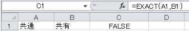

Excelメモ¶
excelでセルの値を選択できるようにリストを設定方法¶
同じシートの複数ページに対して、共通ヘッダーの印刷設定¶
[ページ レイアウト] タブの [ページ設定] で、[印刷タイトル] をクリックします。
[印刷タイトル]の[タイトル行]まだは[タイトル列]に参照行、列を記入する
たとえば、各ページの上部に列ラベルを印刷する場合は、[タイトル行] ボックスに「$1:$1」と入力します。
参考URL: 全ページの先頭の列見出しとともに行を印刷する
関数利用¶
二つセルの文字列が同じかどうかを判断する関数：EXACT

C1セルに入力する式は、 =EXACT(A1,B1)
同じ場合は、TRUEを表示、違っている場合は、FALSE と表示されます。